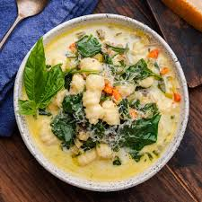

Italian Sausage and Gnocchi Soup

Dish Description
This Italian Sausage and Gnocchi Soup is a comforting, one-pot meal that brings together the bold flavors of spicy Italian sausage and tender, pillowy potato gnocchi. The soup features a rich, creamy base enhanced by sautéed onions and garlic, providing a savory depth that perfectly complements the hearty sausage. With the addition of fresh spinach and a touch of heavy cream, it offers a beautiful balance of color and texture, making it an ideal choice for a cozy dinner on a chilly evening.
What makes this recipe a standout is its simplicity and speed, allowing you to have a gourmet-quality soup on the table in just about 30 minutes. It captures the essence of classic Italian comfort food without requiring hours of simmering, making it accessible for any night of the week. Whether you're looking for a satisfying family meal or a dish to impress guests, this gnocchi soup provides a decadent, soul-warming experience that feels both rustic and refined.
Ingredients
- ½ pound bulk Italian sausage
- ¼ cup butter
- ½ cup chopped yellow onion
- 1 teaspoon minced garlic
- ¼ cup all-purpose flour
- 3 ½ cups unsalted chicken broth (such as Swanson)
- 1 cup heavy cream
- 1 (16 ounce) package potato gnocchi
- ½ cup chopped spinach
- ½ cup canned diced tomatoes
- salt and pepper to taste
- ¼ cup grated Parmesan cheese (or more to taste)
Steps
- Gather all ingredients.
- In a large pot or Dutch oven over medium heat, cook sausage until browned and crumbly, about 5 to 7 minutes. Drain and discard excess fat.
- Stir in butter until melted. Add onion and garlic; cook and stir until onion is translucent, about 5 minutes.
- Whisk in flour until combined. Slowly whisk in chicken broth and heavy cream until smooth.
- Bring the mixture to a boil. Add gnocchi, spinach, and tomatoes. Reduce heat to medium-low and simmer until gnocchi are tender and cooked through, about 5 to 10 minutes.
- Season with salt and pepper to taste. Serve topped with Parmesan cheese.
Home